"Fresh Fruit Beauty" — هوية بصرية مرحة وبريميوم لبراند مستحضرات تجميل مستوحى من الفاكهة، من الشعار لحد آخر بوست على السوشيال ميديا.

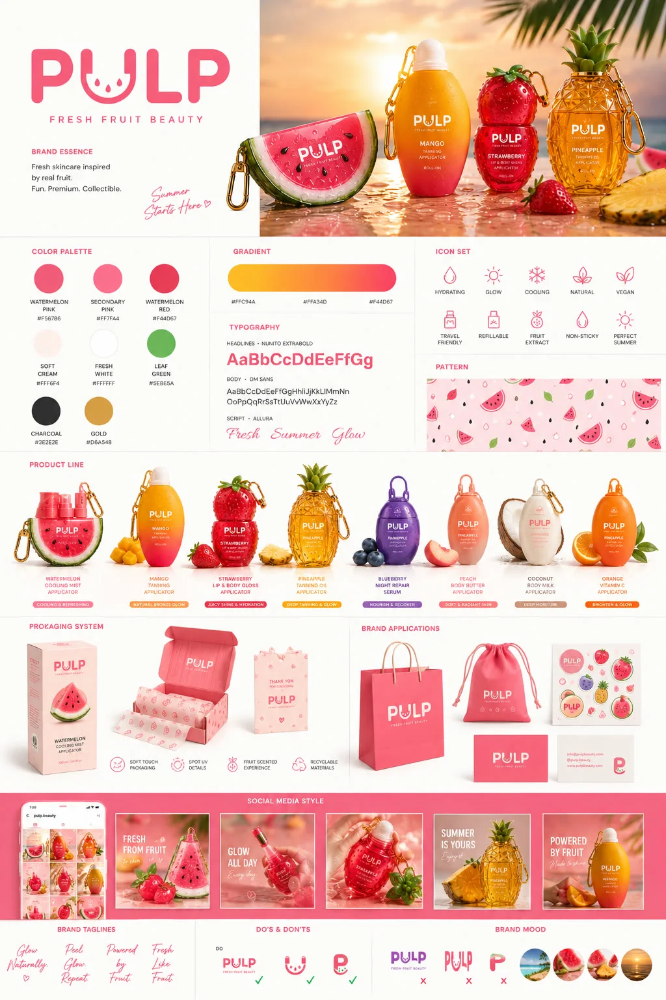
PULP براند مستحضرات تجميل بفكرة مختلفة — عبوات على شكل فاكهة حقيقية، بشخصية مرحة وصيفية. المشكلة إن أي براند بيوتي جديد بيتنافس في سوق مزدحم، ومش كفاية إنه يبقى شكله حلو — لازم يبقى نفس الشخصية دي ثابتة على المنتج، التغليف، الإعلان، وكل بوست سوشيال ميديا من غير ما حاجة تبان غريبة عن التانية.
 02 — الهوية البصرية
02 — الهوية البصرية
الشعار حرف "U" في PULP اتحول لابتسامة بطيخة — تفصيلة صغيرة بتحمل شخصية البراند كلها. الألوان اتبنت حوالين درجات الفاكهة الطازة، والخطوط مزيج بين خط دائري ودود (Poppins Rounded) وخط يدوي مرح للمس الشخصي.
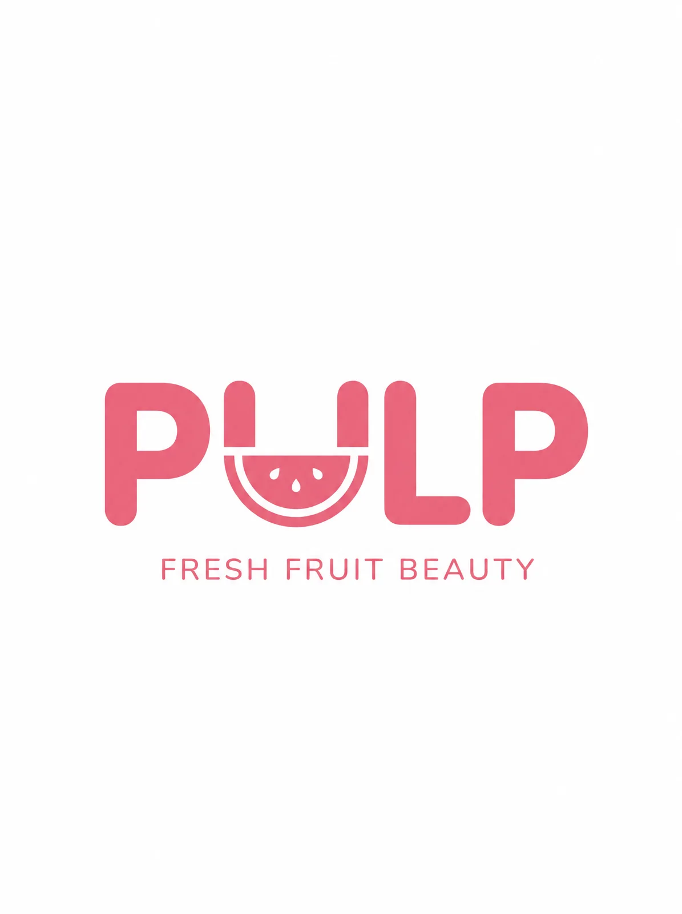
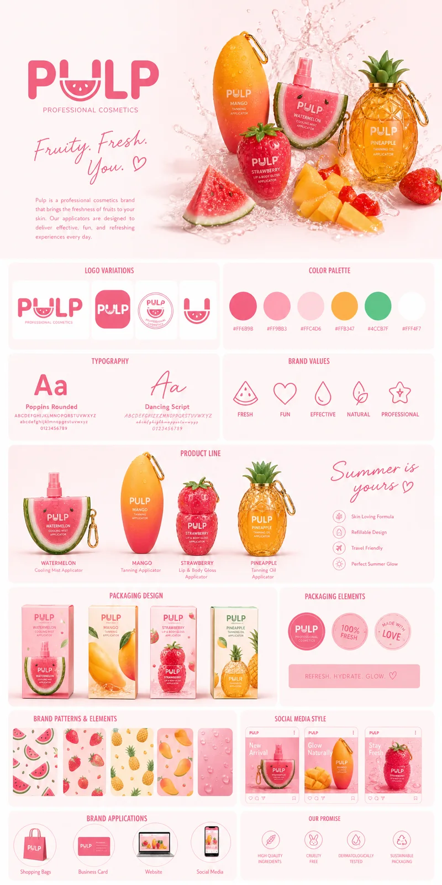
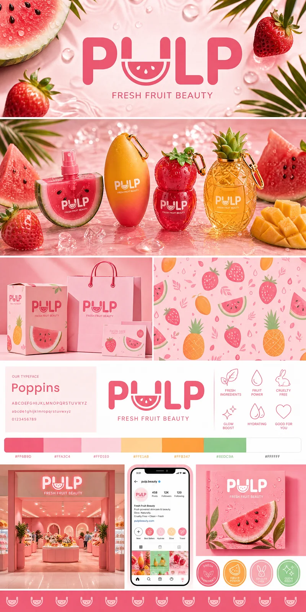
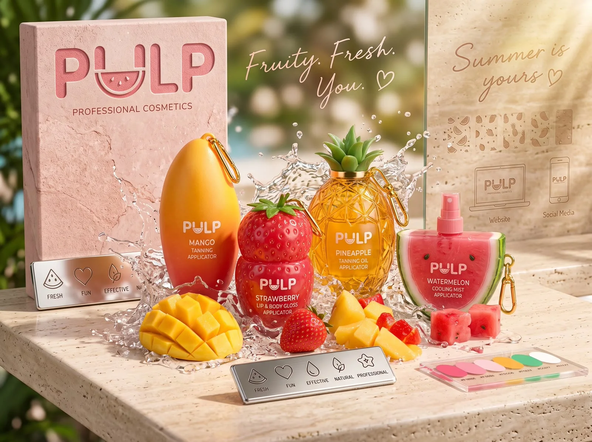
مش تغليف عادي عليه شعار — كل عبوة مصممة بشكل الفاكهة نفسها، بتفاصيل واقعية وقفل ميدالية ذهبي يخليها قطعة إكسسوار قابلة للتجميع، مش مجرد منتج بيتستخدم ويترمي.
 04 — حملة إعلانات المنتج
04 — حملة إعلانات المنتج
كل منتج له إعلان بنفس القالب بالظبط — صورة البطل، مميزات المنتج بأيقونات، خطوات الاستخدام، ولمسة أسلوب حياة صيفية — عشان لما العميل يشوف أي إعلان من التشكيلة يعرف فورًا إنه PULP.
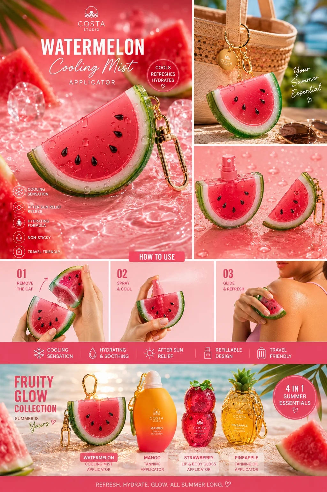
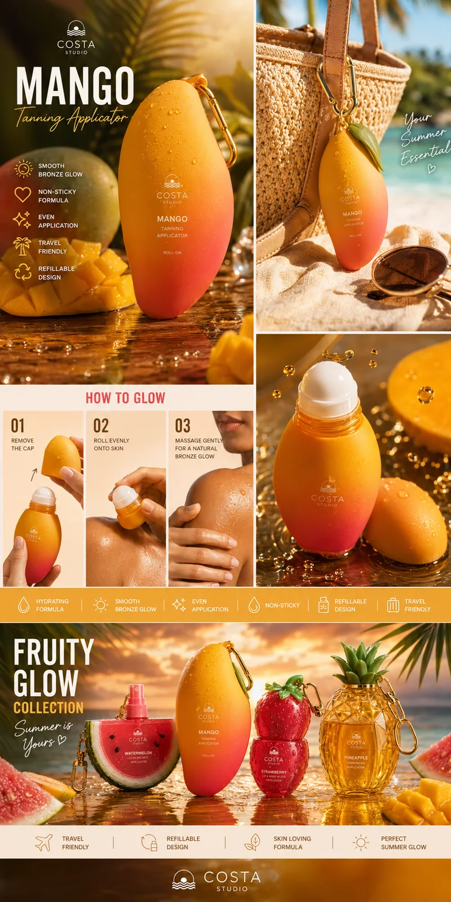
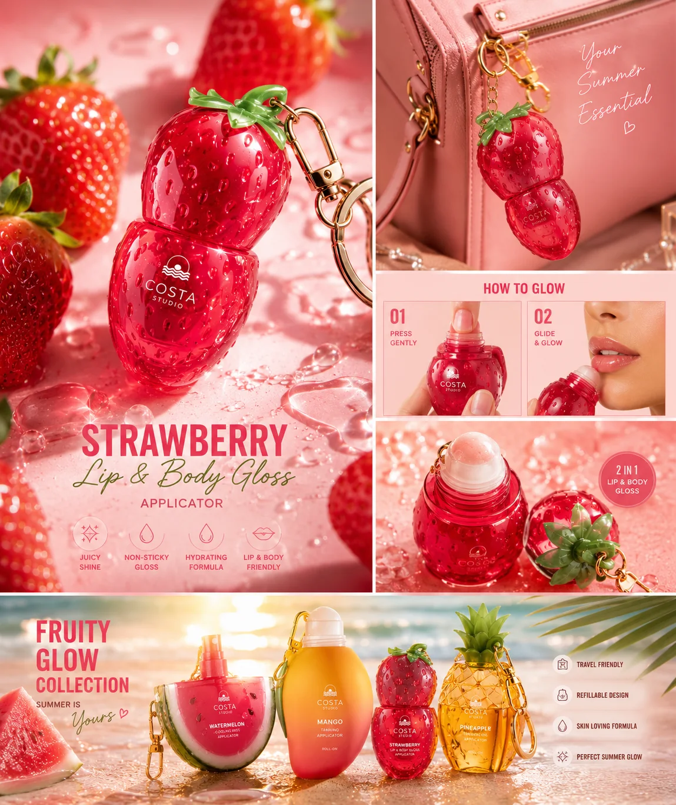
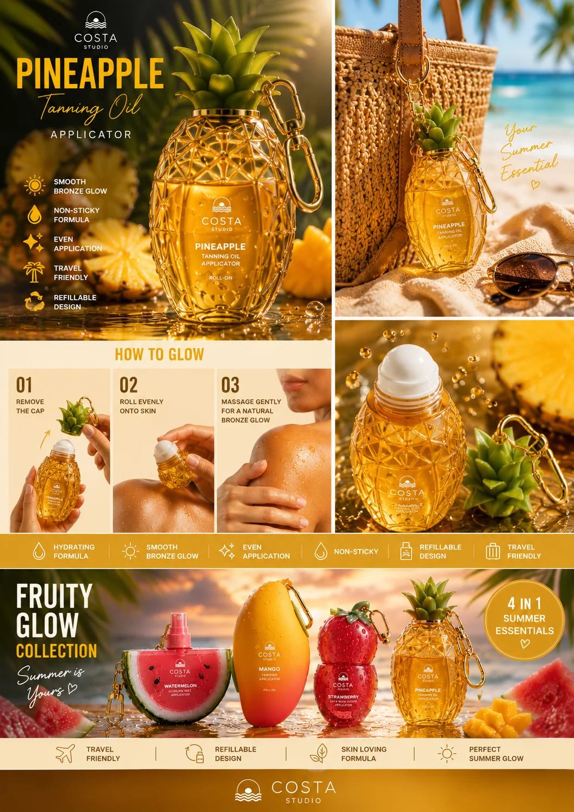
هوية PULP اتمدت لمحتوى لايف ستايل كامل — لوك بوك ملابس بنفس ألوان البراند، وحملات سوشيال ميديا بشخصية صيفية واحدة سواء على الشاطئ أو في الاستوديو.
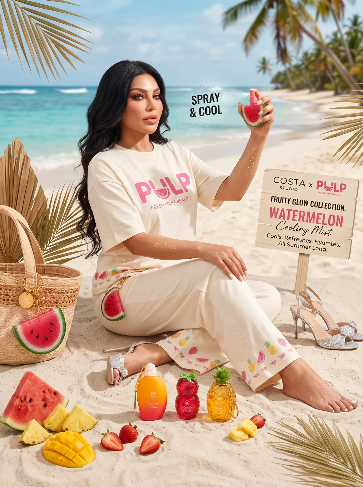
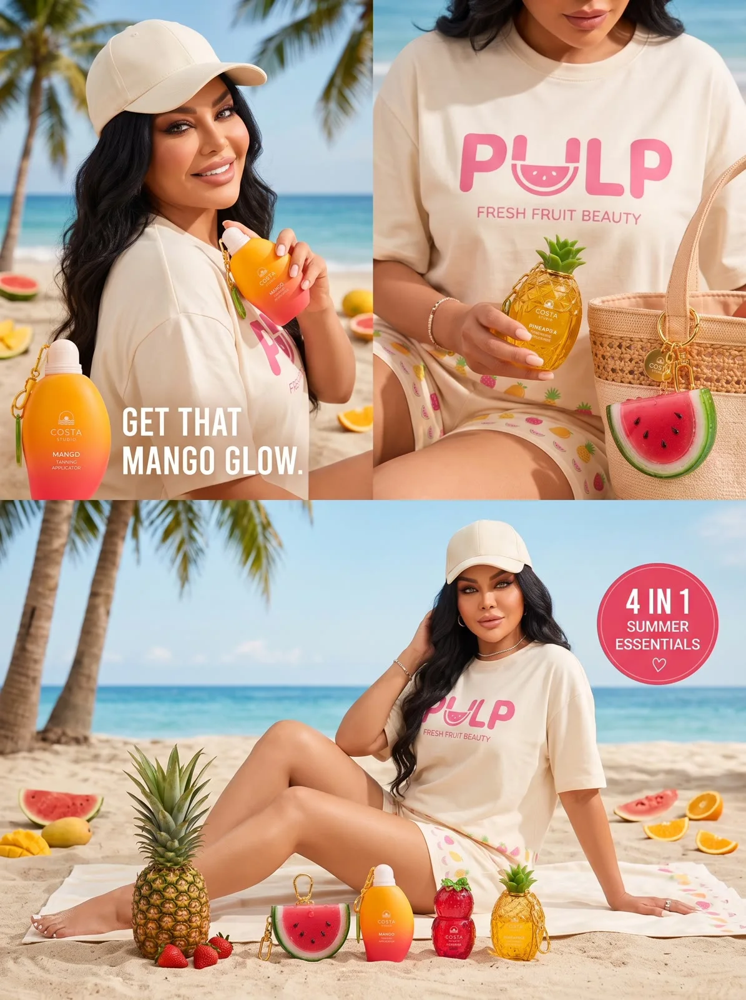
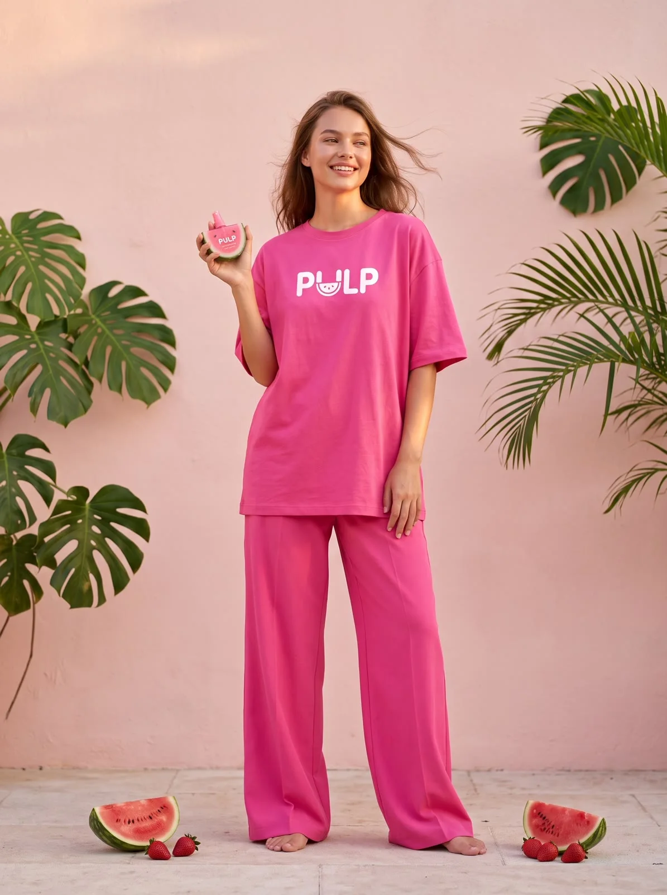
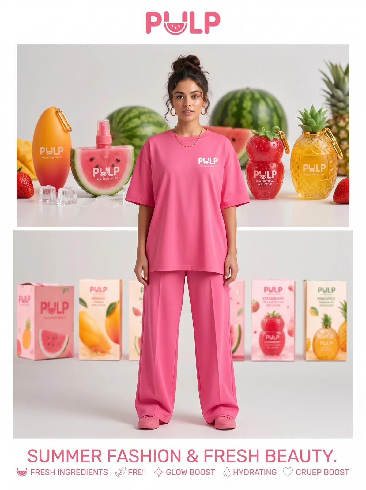
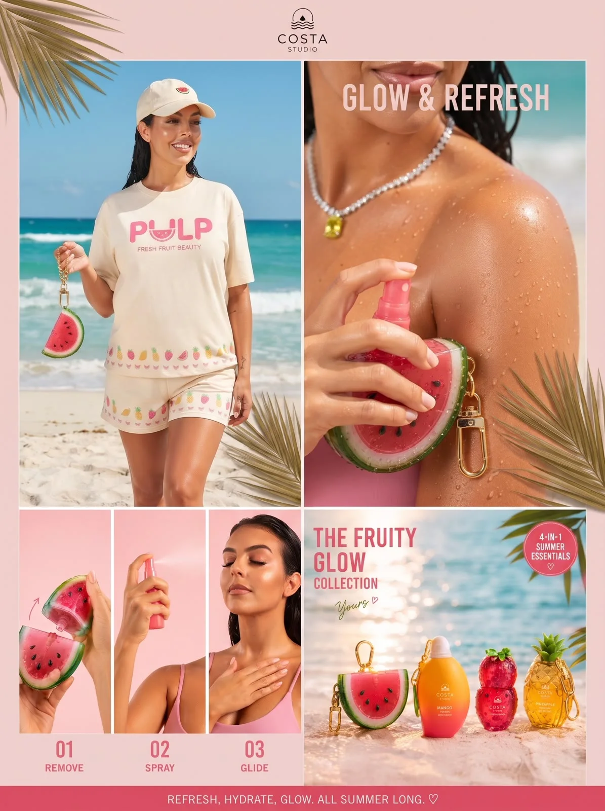
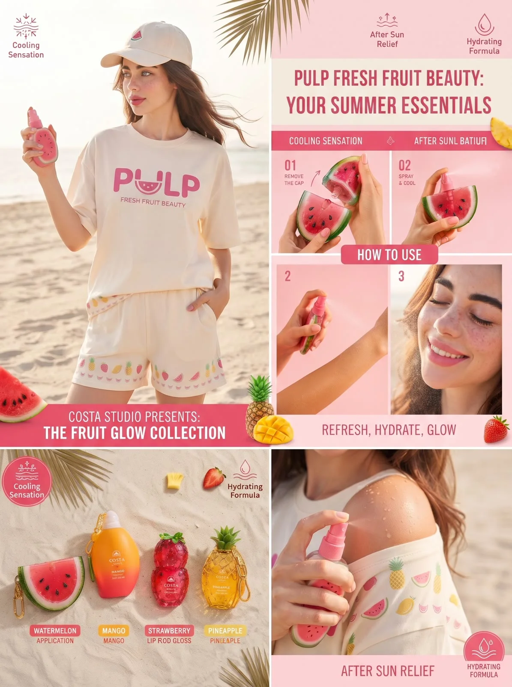
 06 — قبل وبعد
06 — قبل وبعد